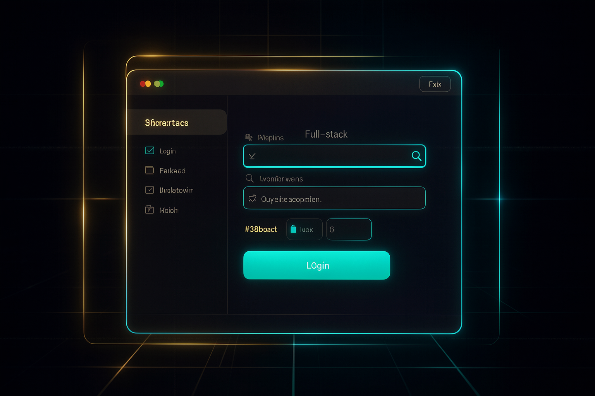

Learning path map
Detailed content
🧠 Mental Model & First App
From what runs in the background to what the user sees — and the first app live: background vs. visible, frontend vs. backend, the request/response cycle, design tips, the design skill, design prompt language, the AI Lead Qualifier build, and the frontend ↔ backend connection.
The difference between what runs invisibly in the background (workflows, scripts) and what users can see—an app with an interface people interact with.
It's the turning point in the learning path: moving from invisible automation to a product that other people use.
Background vs. interface; full-stack app; start simple and iterate with features.
The frontend is everything the user sees (buttons, forms, fonts, layout), running in the browser; the backend runs on the server and handles the logic, API calls, and database.
It's the mental model behind everything else about apps — you don't need to master every detail, but you do need to internalize this separation.
Browser vs. server; UX (navigability, readability, clarity); separation of responsibilities.
The continuous exchange cycle: the user clicks → a request goes to the server → the server processes it (saves data, calls an API, runs logic) → the response comes back → the frontend updates the screen.
Understanding this back-and-forth explains why apps need an interface and real-time interaction, unlike workflows that run in the background.
Request → processing → response → UI update; real-time interaction.
Techniques for creating beautiful, original websites while avoiding the generic look AI-generated sites tend to have (standardized layouts, colors, gradients, and hero sections).
An app with a polished product look conveys credibility; the AI's "safe and predictable" result goes unnoticed.
Why AI outputs look alike; generic prompts produce generic results; specific feedback.
Use the design skill to elevate the UI; clone or draw inspiration from gallery sites; upload reference screenshots and ask for something similar.
It's the highest-impact visual shortcut — a design skill changes the result even with a single prompt.
Frontend design skill; inspiration galleries; component libraries; image references.
Describe the layout, components, and visual tone precisely (e.g., fixed header with logo on the left, links on the right, CTA with a blue glow, hero with large, bold text), and give specific feedback as you iterate.
Concrete vocabulary avoids the endless cycle of "that's wrong" — you say what you liked and what to change.
Layout/components/tone; feedback on what you liked and disliked; guided iteration.
The end-to-end build of a full-stack lead qualification app: backend on Trigger.dev, frontend on Vercel, connected—from a simple prompt to a published app.
It's the anchor project that ties the concepts together in a real app accessible by URL.
CLAUDE.md + base structure; dev and production deploy; result: score, summary, and next steps.
Connect the frontend to the backend using keys/environment variables in Vercel (the Trigger.dev secret key), with automatic deployment on every push to GitHub.
It's what lets the interface communicate with the logic — and what keeps the site up to date.
Secret key as an env var; never paste it into chat; auto-deploy via GitHub.
🔐 Real-World Production: Auth, Security, Payments & Integration
Login, data protection, revenue, and connecting a frontend to an n8n workflow: why authenticate, authentication with Supabase, Row-Level Security, SQL migration & auth URLs, security audit, Stripe freemium, Stripe product/keys/webhook, frontend to n8n workflow, and a recap of incremental iteration.
An app without login lets anyone with the URL trigger the workflow and use your AI tokens — you pay for other people’s usage.
Authentication protects usage and data; it’s the first step before leaving the app open in production.
Risk of an open app; protect usage and data; users with their own data.
Add login/sign-up using Supabase as the database and authentication provider: create the project, set the database password (separate from the login password), and choose the region.
A ready-made provider gives you authentication and a database without having to build everything from scratch.
Project URL + publishable key as env vars in Vercel; database password ≠ login password.
Rules that live inside the database to isolate data between users—even if there’s a bug in the frontend, no one can see another user’s data.
It's an extra layer of security that doesn't depend on the interface code being perfect.
Row-level isolation; defense in depth; enable RLS on the table.
Run the migration generated by AI (e.g., create the leads table) in the Supabase SQL editor, then configure the app URL (Vercel) and the redirect URL in the auth settings.
Without the schema in the database and the correct URLs, login won’t complete the return flow to the app.
SQL editor; table created by migration; app URL + redirect URL.
Ask the AI to act as a security specialist and check protected routes, ensure no keys are exposed in the frontend, keep secrets only in env vars, and confirm RLS is active.
An explicit audit catches vulnerabilities before they reach production.
Protected routes; no exposed keys; secrets in env; RLS verified.
Add payments with Stripe using a freemium model: a limited free tier (e.g., 2 qualifications/day) and a paid tier (subscription) via Stripe Checkout.
Completes the transition from "just a workflow" to an app that can generate revenue and limit usage.
Free vs. pro tier; recurring subscription; Checkout.
Create the recurring product, copy the price ID, get the keys (publishable + secret), create the webhook with the right events, and run the subscriptions table migration.
These are the four pieces that connect the payment to your app and keep the subscription state up to date.
Price ID; four keys; checkout/subscription events; subscriptions table.
Connect an n8n workflow to a frontend by replacing the form node with a Webhook (trigger) and the final node with "Respond to Webhook", linking them via an env var in Vercel.
It's the standard way to give any n8n workflow a polished interface and open it by URL.
Replace the first and last nodes with webhooks; production URL; env var in Vercel.
A recap of the journey: the app started as a one-sentence prompt and grew in layers—design → authentication → payment.
Good engineering is incremental: start small, publish early, and scale as needed, without planning everything at once.
Layers; publish the first version; grow through features.